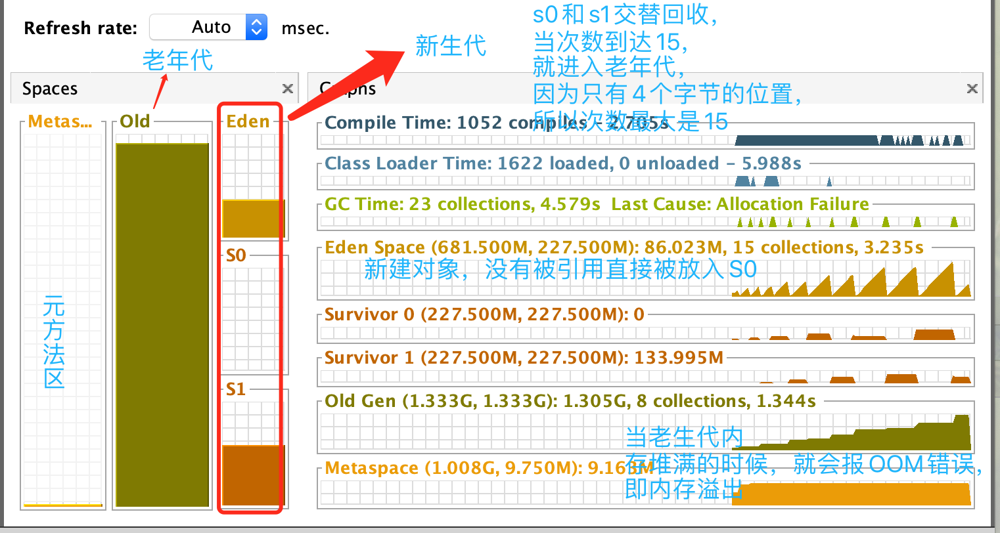
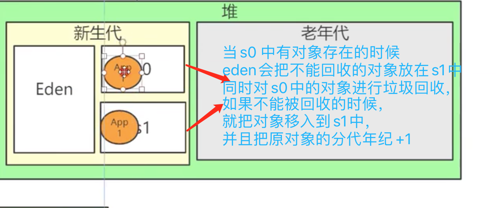

jdk，jre，jvm3者的关联关系内存模型分布

字节码文件的运行流程

一个方法就是一个栈帧，有多少个方法就有多少个栈帧（因为方法内的局部变量出了方法就失效了，所以要用方法来作为隔离）（main方法也算一个栈帧）栈帧的特点

本地方法栈 是指代码中的方法，被关键词 native 修饰的 方法 如下是 常用方法 Thread.sleep(1000L); // public static native void sleep(long millis) throws InterruptedException 这个意思是这个方法，底层是使用c++实现的，全称为Java Native Interface 缩写为jni 方法区（元空间）存放的是类的模版信息，比如类的属性，对象和类之间的关系，在堆上开辟两个空间，存放两个对象， 但是两个对象都是指向方法区（元空间中的同一个类模版对象）
内存模型

如图所示，在上图中的(栈)线程中的 存在4个模块，1，局部变量 2，操作数栈 3，动态链接 4，方法出口 局部变量 存放方法内的自定义的变量； 操作数栈，是方法内的运算。动态链接：当方法执行出现异常，中止方法跳出链接 ； 方法出口，当程序没有异常的出现将结果进行返回
在线帧 - main() 中的局部变量 ，生成的对象，实际上的地址是在堆上生成两个对象，让对象的指向这两个对象的地址
方法区，元空间 存储的是 常量、类变量，类的模版信息
使用javap -c 命令对 class文件进行反汇编 ，得到如下文件，这些命令就是 jvm 对操作系统内核进行操作的api
javap -c JvmLearnTuning.class
Compiled from "JvmLearnTuning.java"
public class com.myself.learnjavanote.threadpool.JvmLearnTuning {
public com.myself.learnjavanote.threadpool.JvmLearnTuning();
Code:
0: aload_0 // 当前类中的指令都可以通过api文档进行查询
1: invokespecial #1 // Method java/lang/Object."":()V
4: aload_0
5: ldc #2 // int 204800
7: newarray byte
9: putfield #3 // Field bytes:[B
12: return
public static void main(java.lang.String[]) throws java.lang.Exception;
Code:
0: getstatic #4 // Field java/lang/System.out:Ljava/io/PrintStream;
3: ldc #5 // String hello～～～～
5: invokevirtual #6 // Method java/io/PrintStream.println:(Ljava/lang/String;)V
8: new #7 // class java/util/ArrayList
11: dup
12: invokespecial #8 // Method java/util/ArrayList."":()V
15: astore_1
16: aload_1
17: new #9 // class com/myself/learnjavanote/threadpool/JvmLearnTuning
20: dup
21: invokespecial #10 // Method "":()V
24: invokeinterface #11, 2 // InterfaceMethod java/util/List.add:(Ljava/lang/Object;)Z
29: pop
30: ldc2_w #12 // long 10l
33: invokestatic #14 // Method java/lang/Thread.sleep:(J)V
36: goto 16
}
上面代码前面的数字就是程序计数器反编译后，按照规定的行数执行，计算当前应该执行的代码的行数
常见的操作系统的api 命令
0x36 istore 将栈顶int型数值存入指定本地变量
0x37 lstore 将栈顶long型数值存入指定本地变量
0x38 fstore 将栈顶float型数值存入指定本地变量
jvm中的的流程
代码如下
public class JvmLearnTuning {
private byte[] bytes = new byte[1024 * 200];
public static void main(String[] args) throws Exception {
List list = new ArrayList<>();
while (true) {
// 每次新建一个对象，就会在内存中开辟一个数组的空间
list.add(new JvmLearnTuning());
// 模拟每10毫秒一个用户登录
Thread.sleep(10L);
}
}
}

堆中的内存分布大概为2个部分 1，新生代 2，老年代 且占比为 新生代1/3 老年代 2/3 新生代中又分为 eden 、 s0、s1 3个区，且占比分为8：1：1
GC 的流程是 当一个新的对象诞生的是，存放在Eden区（伊甸园区）（据说是因为这个人是基督教徒，这个名字起源于圣经） ，
当eden区的内存使用达到峰值 就会进行一个minor.gc ,当垃圾回收器发现这个对象没有被引用的时候，就会被放入到s0区域，
这个时候的当前对象的分代年龄就会加1 ，当第二次从eden进行回收的时候如果对象不能被回收，
且发现s0 中有对象的时候，把对象放入s1 ,同时对s0中的对象进行回收，如果不能回收的话，
再次把项目放入s1中，
再次加把s0的对象放入，且把刚回收的对象的分代年龄加1，当分代年龄达到15且还没被回收的话，就进入到老年代
当老年代内存达到峰值，会触发一个full.gc 的方法把老年代和新生代一起回收，这样会导致一个STW ,即内存溢出
为什么会引起这个溢出，因为新生代和老生代一起进行回收，无法提供正常服务
使用工具 idea中下载 VisualVM Launches插件 ，并在次插件中安装 GC 插件 ，就可以看出内存回收情况图

/**
* 1个方法就是栈帧，这里创建的是无数个方法，
* 那么就会一直占用栈内存，导致栈溢出
*/
public void foo(){
foo();
}